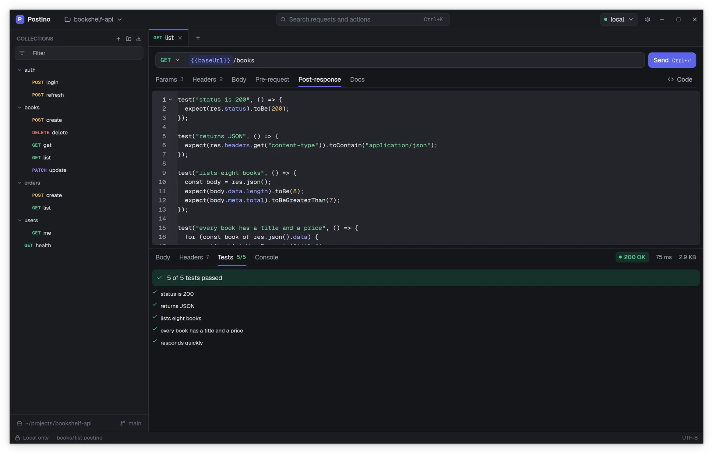

Scripts and tests
Each request can carry two small JavaScript scripts: one that runs before the request is sent, and one that runs after the response arrives. Use them to prepare data, check responses with tests and pass values from one request to the next.


Where scripts live
Write them in the Pre-request and Post-response tabs of the request editor. In the file they are the ::: pre and ::: post sections, so they are versioned and reviewed with the rest of the request.
POST {{baseUrl}}/orders
Content-Type: application/json
Idempotency-Key: {{idempotencyKey}}
::: body json
{ "sku": "BOOK-42", "quantity": 1 }
::: pre
vars.set("idempotencyKey", util.uuid());
::: post
test("order created", () => {
expect(res.status).toBe(201);
expect(res.json()).toHaveProperty("id");
});
env.set("orderId", res.json().id);When they run
- The pre-request script runs first. It sees the request before variables are replaced, and can change its method, URL, headers and body, and set variables with
vars.set(). - Postino replaces the
{{ }}markers and sends the request. - The post-response script runs with the response in
resand the request as it was actually sent inreq. It runs tests and can store values for later requests withenv.set().
An empty script is skipped. An error in the pre-request script stops the run before anything is sent. An error in the post-response script is reported, but the response and the tests that already ran are still shown.
Writing tests
A test is a name and a function. Inside it, expect(value) gives you matchers that throw when the check fails:
test("status is 2xx", () => {
expect(res.status).toBeGreaterThan(199);
expect(res.status).toBeLessThan(300);
});
test("returns a list of books", () => {
const body = res.json();
expect(Array.isArray(body.items)).toBe(true);
expect(body.items.length).toBeGreaterThan(0);
});
test("first book has the expected shape", () => {
const book = res.json().items[0];
expect(book).toHaveProperty("isbn");
expect(book.title).toMatch(/\w+/);
expect(book.tags).toContain("fiction");
});
test("is JSON", () => {
expect(res.headers.get("content-type")).toContain("application/json");
});
test("is fast enough", () => {
expect(res.timeMs).toBeLessThan(500);
});Every matcher can be negated with .not: expect(res.status).not.toBe(500). The full list is in the Script API.
- A failing test records its error message and the script goes on, so one failure never hides the others.
- Results appear in the Tests tab of the response, with a
passed/totalcount. - A test can contain several
expect()calls. The first one that fails ends that test. - Throwing your own error also fails a test:
throw new Error("missing cursor").
Common recipes
Log in once, reuse the token
Store the token in the session from the login request, and reference it in every other request.
POST {{baseUrl}}/auth/login
Content-Type: application/json
::: body json
{ "username": "{{username}}", "password": "{{password}}" }
::: post
test("login succeeded", () => {
expect(res.status).toBe(200);
});
env.set("token", res.json().token);GET {{baseUrl}}/orders
Authorization: Bearer {{token}}Session variables last until you quit Postino and are never written to disk, so the token does not end up in git.
Chain requests
Save an id from one response and use it in the URL of the next:
// post-response of orders/create
env.set("orderId", res.json().id);GET {{baseUrl}}/orders/{{orderId}}
Authorization: Bearer {{token}}Add a computed header
// pre-request
req.headers.set("X-Timestamp", String(util.now()));
req.headers.set("X-Nonce", util.randomString(16));Build a body from code
The body must exist in the file (any type), then the script can replace its text:
// pre-request, with a ::: body json section in the file
const items = [];
for (let i = 1; i <= 3; i++) {
items.push({ sku: "SKU-" + i, quantity: util.randomInt(1, 5) });
}
req.body = JSON.stringify({ items: items, createdAt: util.isoDate() });Keep a cookie
// post-response of the login request
const cookie = res.headers.get("Set-Cookie");
if (cookie) {
env.set("session", cookie.split(";")[0]);
}Then send Cookie: {{session}} in later requests.
Fall back to a default value
// pre-request
if (!env.get("pageSize")) {
vars.set("pageSize", "20");
}Then {{pageSize}} uses the environment value when there is one, and 20 otherwise. env.get() reads the session variables and the active environment's files, in that order; see the Script API.
Debug a script
Print anything with console.log(). The output appears in the Console tab of the response, from both scripts:
console.log("sending", req.method, req.url);
console.log("headers", req.headers.get("Authorization") ? "with auth" : "without auth");The sandbox
Scripts run in QuickJS, a small JavaScript engine with modern syntax: const, arrow functions, template literals, destructuring, classes, JSON, Math, Date, regular expressions and the rest of standard ECMAScript.
The sandbox has no network, file system, timers, modules, require, import, fetch, setTimeout or crypto. A script cannot send another request; to chain requests, run them one after the other and pass values with env.set().
| Limit | Value |
|---|---|
| Memory | 32 MiB per script run |
| Time | 5 seconds per script run |
| State | A fresh engine for every run. Nothing carries over from one run to the next except what you store with env.set(). |
The pre-request and post-response scripts each have their own budget. Going over a limit is reported as a script error and never crashes the app.
Moving scripts from Postman
When you import a Postman collection, request scripts are copied into ::: pre and ::: post, fully commented out, under the line // Imported from Postman. The pm.* API is not supported, adapt it. This table helps with the translation:
| Postman | Postino |
|---|---|
pm.test(name, fn) | test(name, fn) |
pm.expect(a).to.equal(b) | expect(a).toBe(b) |
pm.expect(a).to.eql(b) | expect(a).toEqual(b) |
pm.expect(a).to.include(b) | expect(a).toContain(b) |
pm.expect(a).to.have.property(p) | expect(a).toHaveProperty(p) |
pm.expect(a).to.be.above(b) | expect(a).toBeGreaterThan(b) |
pm.response.to.have.status(200) | expect(res.status).toBe(200) |
pm.response.code | res.status |
pm.response.json() | res.json() |
pm.response.text() | res.body |
pm.response.headers.get(name) | res.headers.get(name) |
pm.response.responseTime | res.timeMs |
pm.environment.set(k, v), pm.collectionVariables.set, pm.globals.set | env.set(k, v) (session only) |
pm.environment.get(k) | env.get(k) |
pm.variables.set(k, v) | vars.set(k, v) |
pm.request.headers.add({ key, value }) | req.headers.set(key, value) |
pm.request.url | req.url |
pm.sendRequest(...) | Not available. Use a separate request. |
CryptoJS, require(...) | Not available. |
Scripts attached to a Postman collection or folder are not imported, since Postino scripts belong to one request. The import lists each one it skipped.